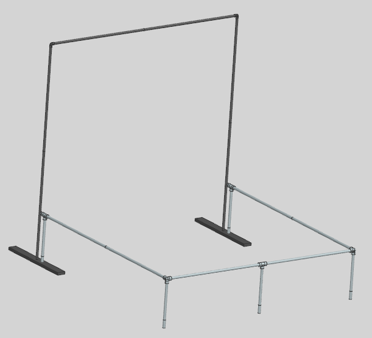
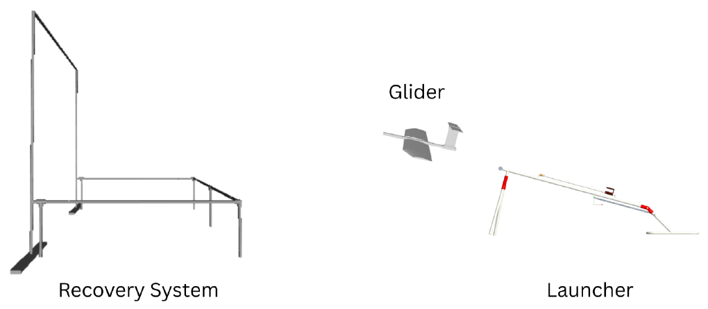
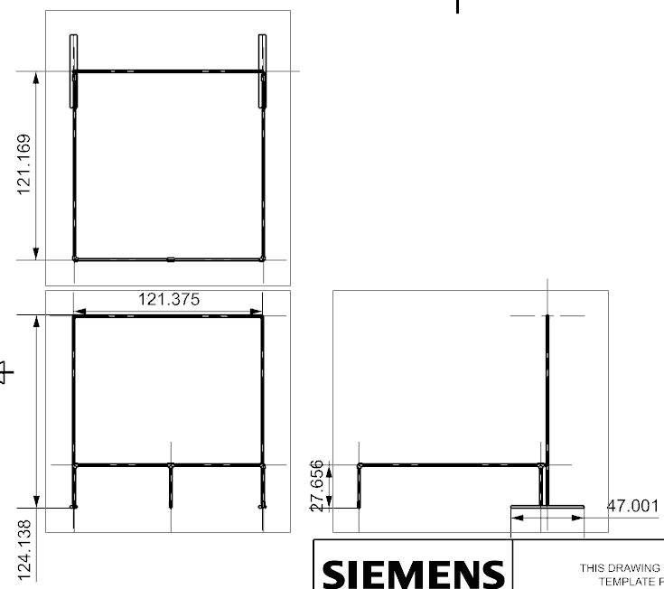
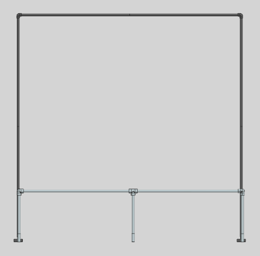
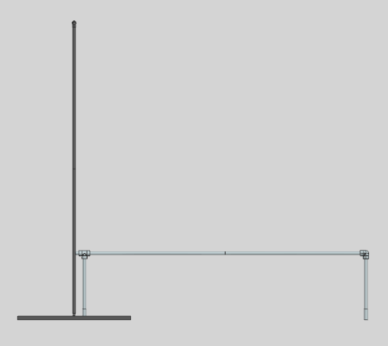
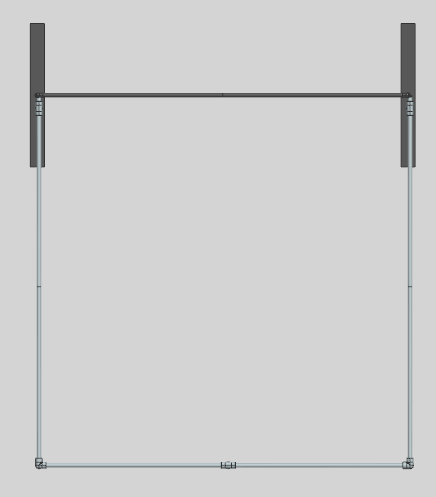
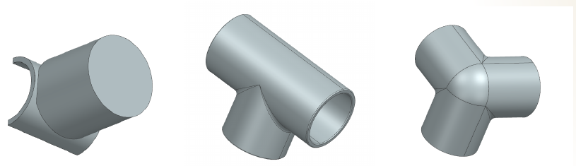

BoilerBird recovery system
- Spring 2026
- Team of 2
- CODE Lab VIP
- Siemens NX, MATLAB
Overview
BoilerBird is a semi-autonomous bird UAV project at Purdue's CODELab, run through Vertically Intergrated Projects. I worked with one teammate on its recovery system.
The recovery system captures BoilerBird after a test flight. BoilerBird 2 is fragile, with lightweight wings and 3D-printed parts. Repeated hard landings can damage the wings, fuselage, and onboard electronics. Recovering it by hand also made test conditions inconsistent. We needed a repeatable way to stop it safely and retest quickly.

Why it matters
The BoilerBird drone wings are fragile, and hard landings can damage vital electromechanical parts. A reliable recovery system protects the drone and makes sure that repeat flight tests are able to be accomplished.
My role
- I built the CAD for the full recovery system in Siemens NX.
- I made the MATLAB impact model for the system.
- My teammate and I brainstormed concepts together and compared them in a weighted decision matrix.
Design requirements
The system had to capture BoilerBird safely, support rapid retesting, assemble and disassemble quickly, work with the launcher, and limit damage to the aircraft.
| ID | REQUIREMENT | THRESHOLD | TARGET |
|---|---|---|---|
| R1 | Incoming load speed | 12 m/s | 15 m/s |
| R2 | Incoming load mass | 900 g | 1350 g |
| R3 | Single part max length | 5 ft | 3 ft |
| R4 | Capture area | 3 × 3 m | 5 × 5 m |
| R5 | Setup time | 15 min | 5 min |
| R6 | Reset time | 3 min | 1 min |

Concept of operations
The glider, the launcher, and the recovery system. Not to scale.
Concept selection
We chose the design with a structured process. This is the short version.
- We listed the options for each part of the system in a morphological matrix. It covered energy absorption, deployment, modularity, rebound prevention, ground interaction, redundancy, aircraft orientation, and reset method.
- We combined those options into 9 concepts.
- We scored each concept from 1 to 10 against 10 criteria in a weighted decision matrix. Impact deceleration control and structural integrity carried the most weight. Reset time and manufacturability came next. We set the weights from what the project needed, such as fast retesting and a build that fit the schedule.
- We cross-checked the results in a Pugh matrix, which compares every concept against a baseline net.
These were the top three.
Loose net with a horizontal base. Selected.
Rotating swivel frame.
A sports barrier net used as sold.
Augmented Datum scored a 10 on impact deceleration control, the most heavily weighted criterion. It also scored a 10 on capture area. The plain Datum net scored only a 1 on deceleration. L-NET scored well on reset time and manufacturability but had the smallest capture area of the three.
In the Pugh matrix, Augmented Datum improved on the baseline in impact deceleration, structural integrity, and capture area. It gave up some simplicity, setup time, cost, and portability. We accepted those trade-offs because impact deceleration was the main goal of the system.
Final design
The final design has a vertical catching section and a horizontal catching section.
- The vertical section uses a modified QuickPlay sports net frame, 10 ft × 10 ft.
- 47-inch support stands keep it upright.
- An oversized net reduces peak impact loading.
- The horizontal section is a PVC frame, 10 ft × 8 ft × 2 ft, with a second net that prevents ground impact.


Front view
Frame about 121 in wide

Side view
About 122 in tall with a 47 in base

Top view
The critical components to watch in testing are the clamp between the vertical and horizontal sections, the net attachment points, and the PVC joints under bending loads. The failure modes to check are joint fracture, net tearing, frame buckling, and clamp slip.

Critical components
Results
The design is complete and the team presented it at the final design review. Building and impact testing come next.
- Highest weighted decision matrix score
- Best impact deceleration and the largest capture envelope
- Better repeatability during testing
- Lower total cost than a fully custom structure
Next steps
- Collect the purchased components and verify tolerances.
- Build the vertical and horizontal sections and validate the clamp system.
- Run impact tests at the masses and speeds in the requirements table. Record setup and reset times over repeated cycles.